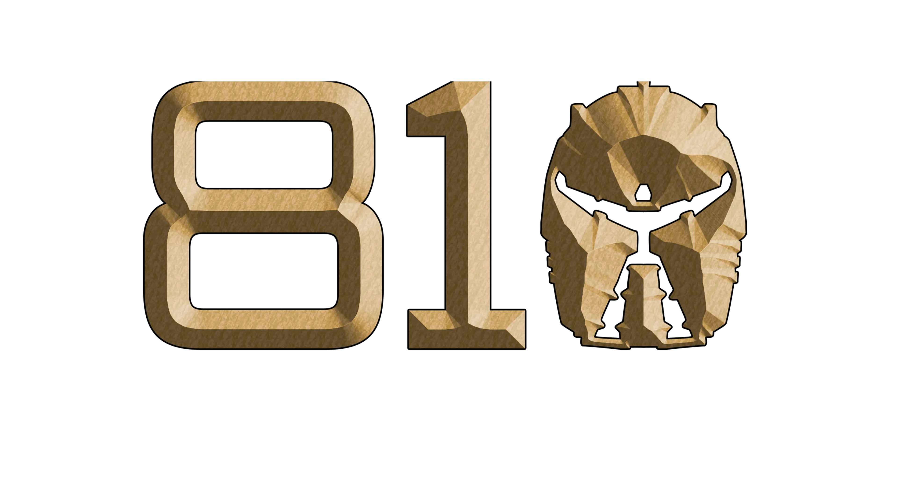
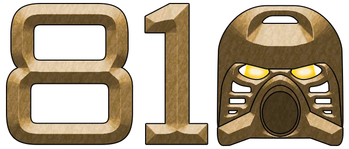
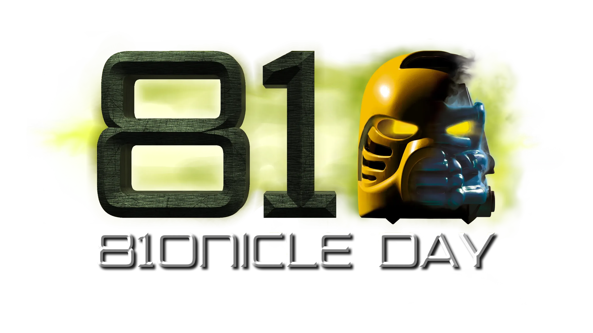
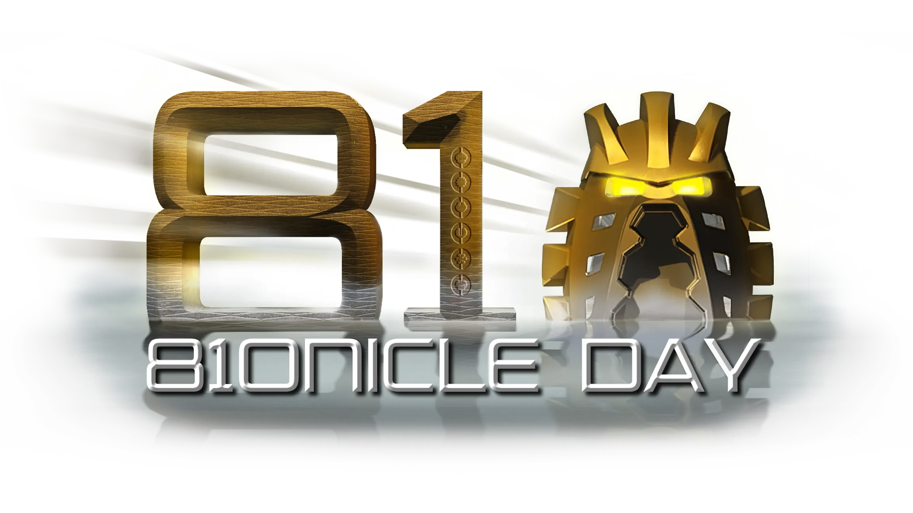
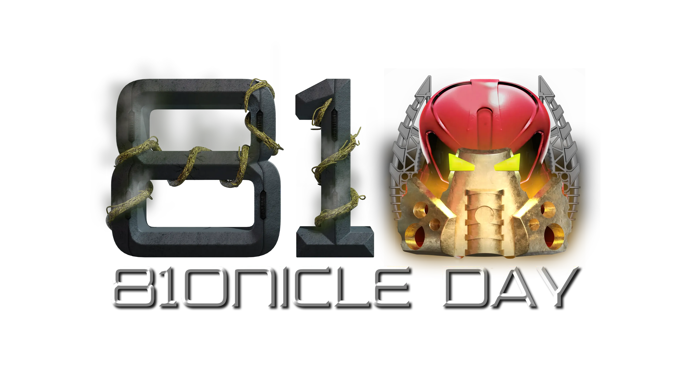
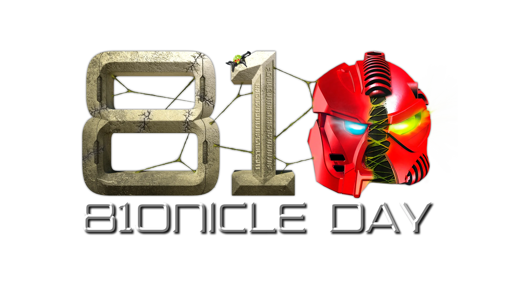
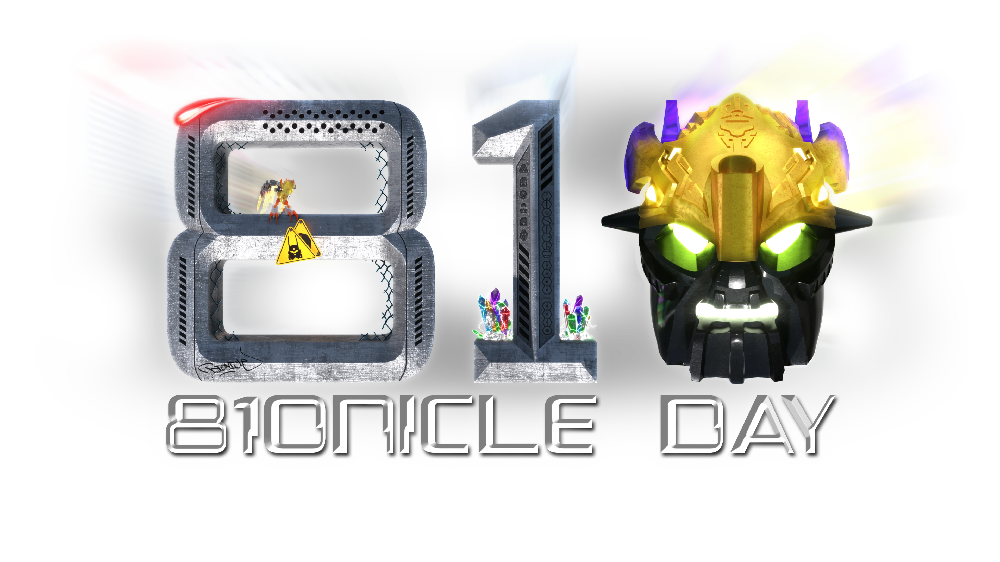
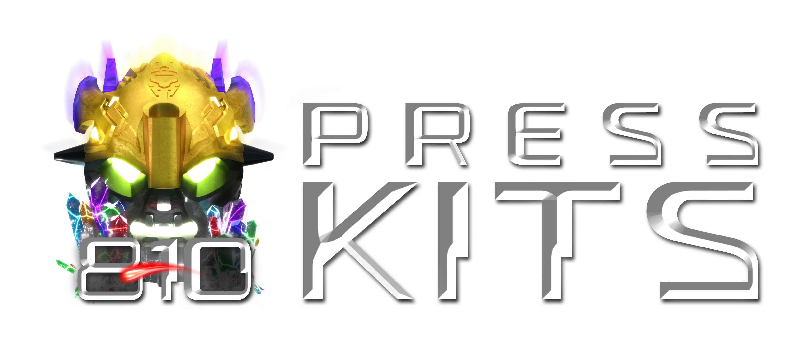

Home | News | Cards | Schedule | Watch | Sign Up
FREE THE BAND...

What is 810NICLE Day?
Inspired by BS01 and TTV’s Makutafest, 810NICLE Day is an annual celebration of BIONICLE and its fans, coined by Dorek and SPIRIT of BS01, and coordinated by Swert of BS01, Vahkiti of the Beaverhouse, and JSLBrowning of Wall of History. The main event is a livestream hosted on August 10th and 11th, featuring a variety of projects from almost every corner of the community. 810NICLE Day could be thought of as an online BIONICLE convention.
810NICLE Day is made possible by our patrons and supporters: Vahkiti, Swert, JSLBrowning, Gonel, Samuel9248, TuragaNuva, Dan Parker, Eric Naud, CrunchbiteNuva, Jiří Chytrý, Mekhane, Owen Baniak, SuddenlyOranges, Nyarah Ghost, Gundam LMT, Defenistration Computing, Ethan Woodcox, & busya.
Where it all began…
The very first 810NICLE Day was streamed on YouTube on August 10th, 2019, and featured a live episode of the Gathered Friends podcast, a Quest for the Masks game in played Tabletop Simulator, a BIONICLE trivia challenge, and a Legend of Mata Nui REBUILT demo.
Watch 810NICLE Day 2019 ↗

810NICLE Day 2020
The second 810NICLE Day featured quite a few more events — numerous community projects joined in, including Wall of History, Bio-Cup, Masks of Power, and BIONICLEsector01. Mask of Destiny, the oldest BIONICLE fan site, made an appearance as well, announcing it was revitalizing itself and merging with several other community sites. BIONIFIGS, an organization of French BIONICLE fans, also conducted an interview with Glatorian comic artist Pop Mhan.
Watch 810NICLE Day 2020 ↗

20 Years of BIONICLE
810NICLE Day 2021 celebrated the twentieth anniversary of the legend we all know and love, focusing specifically on the 2001 sets and story. 2021 was also our first two-day event!
Day one featured a new episode of Reviving BIONICLE, a first look at Myths and Legacy’s Vision of the Great Beings, and the first of two interview panels with noteworthy contributors to BIONICLE (including the legendary — and elusive — Bob Thompson).
Watch 810NICLE Day 2021 (Day One) ↗
Day two featured the second interview panel, along with a new episode of Firespitting with BS01, a BIONICLE game show, and a live Doronai Nui session.
Watch 810NICLE Day 2021 (Day Two) ↗

The Bohrok Awake…
810NICLE Day returned in 2022, this time with a focus on the 2002 sets and story. Returning from 2021 was the 810NICLE Direct, an event highlighting some of the most ambitious game development projects in the community. The Gathered Friends podcast also made a return.
Watch 810NICLE Day 2022 (Day One) ↗
Just like 2021, 810NICLE Day 2022 was a two-day event. The second day featured demos of several BIONICLE fan games, as well as BIONICLE: The Game (Show) and Firespitting with BS01.
Watch 810NICLE Day 2022 (Day Two) ↗

A Great Kanohi Mask!!
Celebrating twenty years of BIONICLE: Mask of Light, 810NICLE Day returned in 2023. Christopher Gaze returned to the role of Turaga Vakama to provide opening narration, and the creative team behind Mask of Light came together to record a new commentary track. Greg Farshtey also returned to narrate a new short story from the Vision of the Great Beings team.
Watch 810NICLE Day 2023 (Day One) ↗
The second day of 810NICLE Day 2023 opened with a tribute to TheShadowedOne1, who passed away earlier that same year. The 810NICLE Treehut returned, bringing us new looks at the latest BIONICLE fan games, as did BIONICLE: The Game (Show).
Watch 810NICLE Day 2023 (Day Two) ↗

Every Legend Has a Beginning
This time celebrating twenty years of BIONICLE 2: Legends of Metru Nui, 810NICLE Day returned in 2024 for it's 6th year. Featuring plenty of returning favourites, as well as brand new events like the Onu-Metru Film Gala, 810 began it's second half-decade on-air with a bang.
Watch 810NICLE Day 2024 (Day One) ↗
The second day of 810NICLE Day 2024 opened with a brand new solo project from JSLBrowning, The Canon Video. Beyond BIONICLE and the Gathered Friends podcast also returned to 810, as well as a brand new addition to our music lineup, Music Inspired By BIONICLE Vol. II from Pokermask and friends! BIONICLE: The Game (Show) also returned, giving Tahu an even more handsome makeover.
Watch 810NICLE Day 2024 (Day Two) ↗

Get Ready for the Spiders...
Returning in 2025 with a dual theme focused on both The City of Legends, and the battle for the Golden Masks, we started day 1 with the Direct and Beyond BIONICLE, with even more returning guests and some new surprises, such as Music Inspired by BIONICLE Vol 1 Remastered and Okotan Daybreak, a Hero of the Stars one-shot from Red Star Games.
Watch 810NICLE Day 2025 (Day One) ↗
Day two kicked off with yet another opening video made by Ozkabot, this time featuring music by Pokermask and the Le-Koro Band, Legends Never Die. Following this was the return of the Le-Koro Band proper, debuting their latest Greatest Hits Vol. 1 in a Pop-Up Video style format. After that, we were treated to some ups, and some takedowns.
Watch 810NICLE Day 2025 (Day Two) ↗
The third day of 810NICLE Day 2025, and subsequent streams after, featured the debut of Chat Plays Maze of Shadows, where viewers at home logged in to send commands to control the classic GBA game BIONICLE: Maze of Shadows.
Watch 810NICLE Day 2025 (Day Three) ↗

Unite the Past. Ignite the Future.
An evil threatens the floating island of Voya Nui, while a unique hunter seeks to claim the Mask of Control on Okoto! 810NICLE Day returns in 2026 with a tri-theme focused on both The Island of Doom, The Journey to One, and the theme's 25th anniversary!

810NICLE Day Press Kit
If you are interested in advertising or promoting 810NICLE Day on any of your socials or websites, you may download the press kit below.